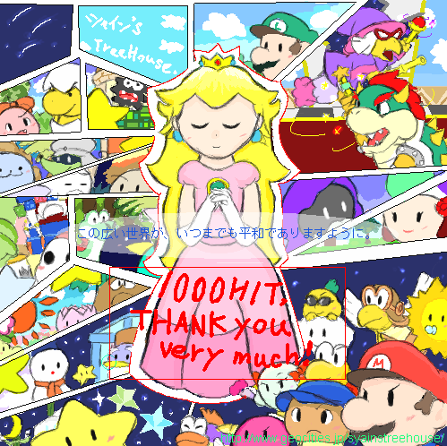

１０００HIT！
THANK YOU THANK YOU VERY MUCH！
|  |
無謀な挑戦をしてみましたｖ
・・・げふげふっ、なんか色々雑になってますが、ここに
「１０００HITどうもありがとうございますーーっ！」
フリーイラストをお届けします。
９５％が初描きという、何度も挫折しそうになったイラストですが・・＾＾；
とりあえず、マリストキャラで頑張ってみました。
本当は
「擬人化しようかなー♪」
とか、
「いっその事登場キャラ全員描いちゃおうかなー♪」
・・とか思ってましたが無理ですってそれは。
本当は星のせいの顔も描きたかった・・キャシーとかチャールズとかサンデールとかetc・・。
ものすごく疲れましたが、描くの楽しかったです♪
愛の偏りもまぁよく見えますこと；
保存してくださる方は、右クリック→名前をつけて保存、でお願いします。
直リンクはなし、という事で・・。
もしもサイトの方に載せてくださるという方がいましたら、どうぞご自由にやっちゃってください♪
というか、泣いて喜びます。はい。
ええっと、載せてくださる場合には、どこかにシャインが描いたことを明記してくださればOKです。
サイズ・画像形式・ファイル名の変更もご自由に。
ちなみに、これはPNG保存で１０８KBです；
また、私のパソコンではJPGに変えた時は、９０．３KBでした。
（・・つまりたいして変わりませんorz）
二次配布はNOです；
・・あ、感想とか報告とかいただけると管理人が天に向かって吹っ飛びます。
５０００HIT絵を描くまで、ここに載せておきますので、
配布期間はカウンタが５０００を超えるまで・・です（長っ！
それでは・・遅くなりましたが、１０００HIT、ありがとうございましたっ！
TOPに帰ります。